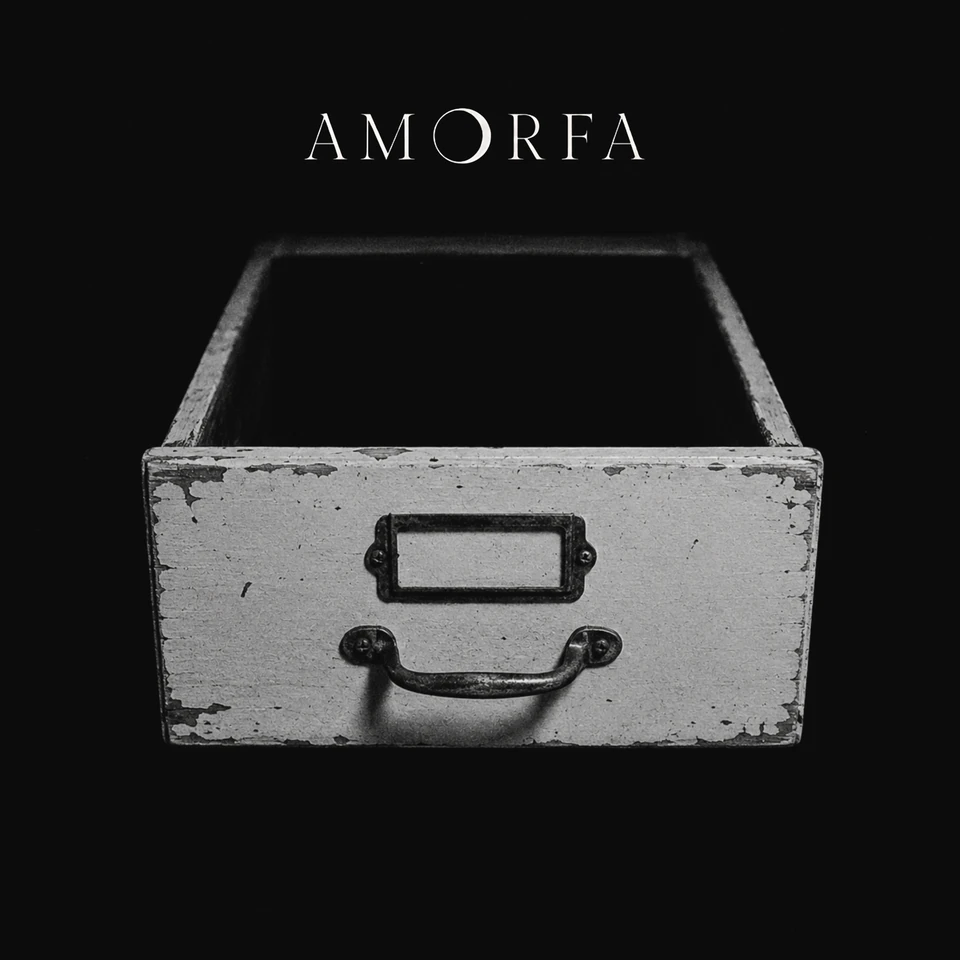

Álbum VI da Antologia AMORFA
Epílogo: Onde Se Guarda o Que Não Existe Mais
O que voltou em fragmentos encontra uma forma de permanecer.
Epílogo: Onde Se Guarda o Que Não Existe Mais é o sexto estado da Antologia AMORFA. Depois da superfície, do corpo, da ausência, da dissolução e do fundo, resta o arquivo. Fragmentos, demos, versões restauradas e vestígios retornam como matéria final: fechamento, inventário e permanência.
tracklist
Faixas
- 01Translúcida
- 02Versão Beta
- 03Olhos Mágicos
- 04Permissão
- 05Mesmo Lugar (Flotação Mix)
- 06Campo Nulo
- 07Nota de Corte (O Amor Que Achei Merecer)
- 08Recibo
- 09Eu Posso
- 10Sem Registro
- 11Fora de Horário (Nada Estreia)
- 12Baixa Resolução
- 13A Última Mentira
- 14Matéria Escura (Vestígio Primário)
- 15Sedimento
- 16Epílogo — Onde Se Guarda o Que Não Existe Mais
- 17Menos Eu (Matriz Restaurada)